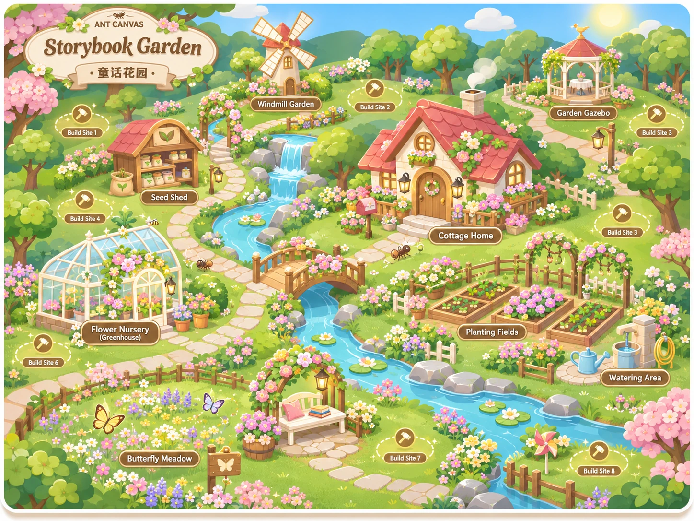
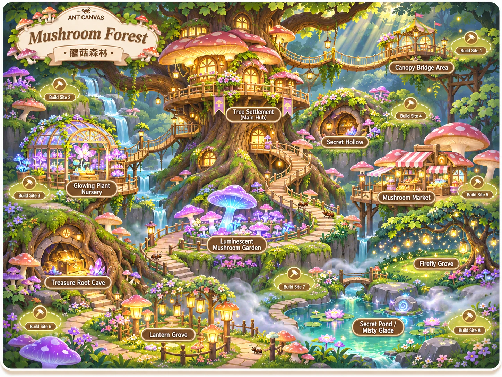
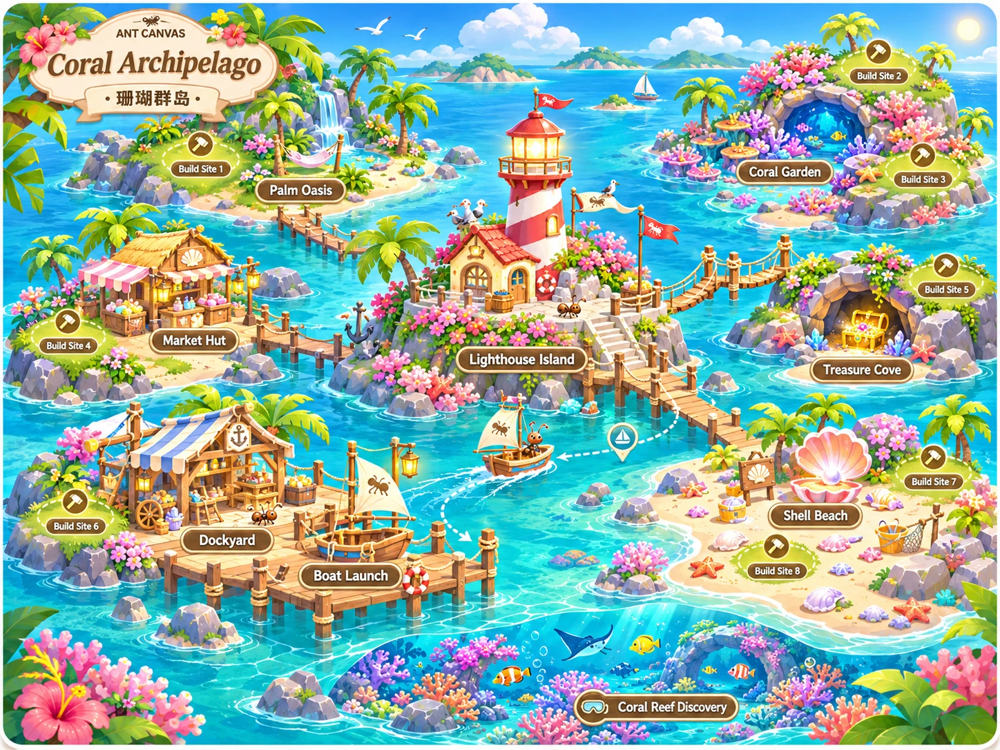
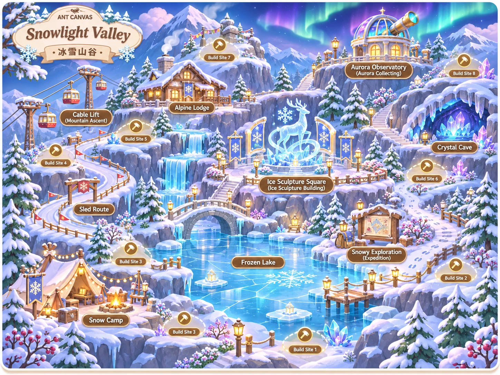

<!doctype html><html lang="zh-CN"><meta charset="utf-8"><meta name="viewport" content="width=device-width,initial-scale=1"><title>ANT CANVAS V3.6 · 原画资源</title><style>body{background:#e6edce;color:#594e34;font:16px system-ui;margin:0}main{max-width:1250px;margin:auto;padding:20px}section{display:grid;grid-template-columns:repeat(2,minmax(0,1fr));gap:14px}figure{margin:0;background:#fff9e5;padding:10px;border-radius:18px}img{width:100%;display:block;border-radius:12px}figcaption{padding:8px}a{color:#607743}@media(max-width:650px){section{grid-template-columns:1fr}}</style><main><a href="village.html?v=world-v36">← Village</a><h1>ANT CANVAS · V3.6</h1><p>原画资产发布验收。若资产尚未上传，明确显示缺失，不展示旧地图冒充新版。</p><section><figure><figcaption>童话花园</figcaption></figure><figure><figcaption>蘑菇森林</figcaption></figure><figure><figcaption>珊瑚群岛</figcaption></figure><figure><figcaption>冰雪山谷</figcaption></figure></section></main></html>